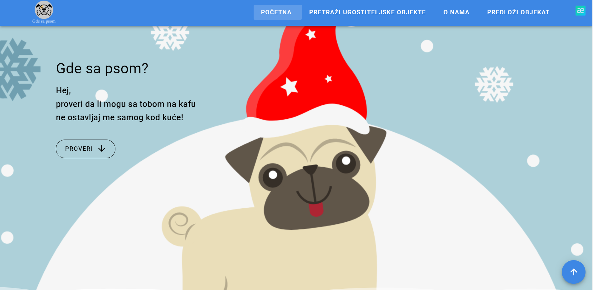

Where with the dog
This is my personal project, technologies I used Vue, Vuex, Vuetify, Axios, VueRouter, css / scss.
Look HereAerwave
This is a project I worked on as a freelancer, technologies used, Vue, Vuex, Axios, VueRouter, Vuetify. This website is used by 1000+ users
Look Here
Find a player
This is my final graduation project on It Academy, from the technologies I used Java, Spring, JSP, MySQL.
Look Here